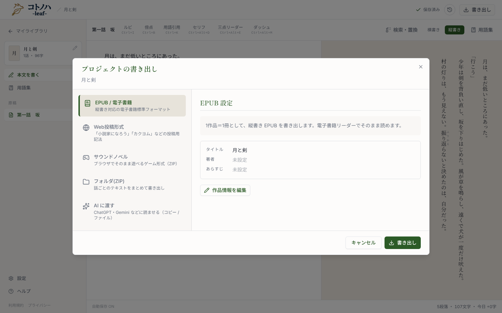
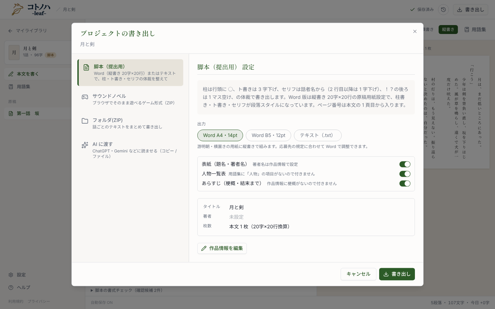
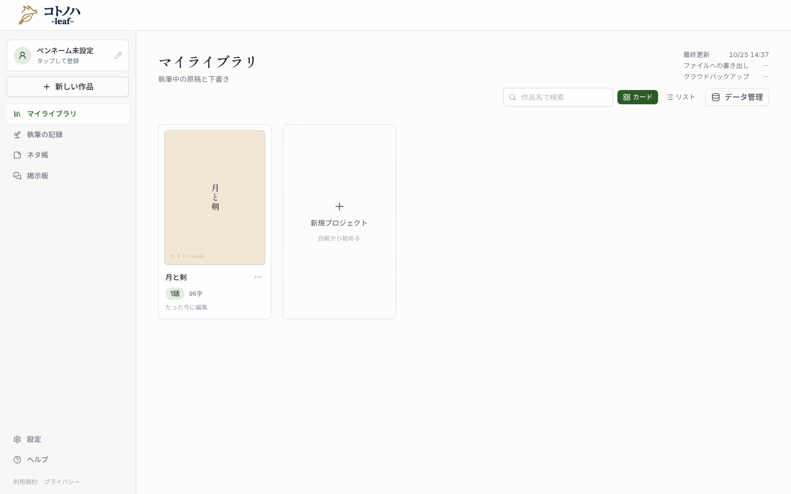
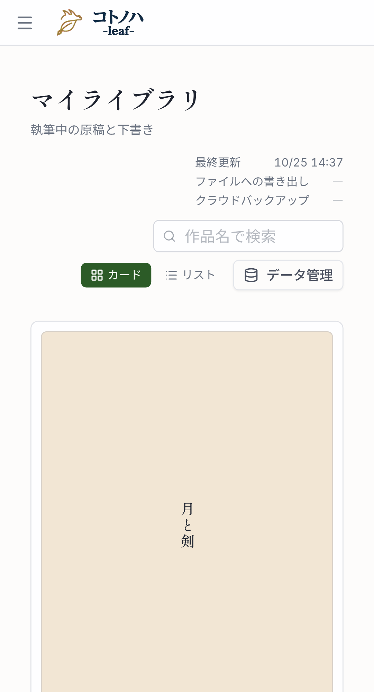
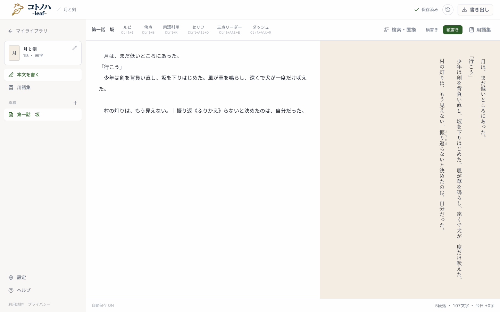
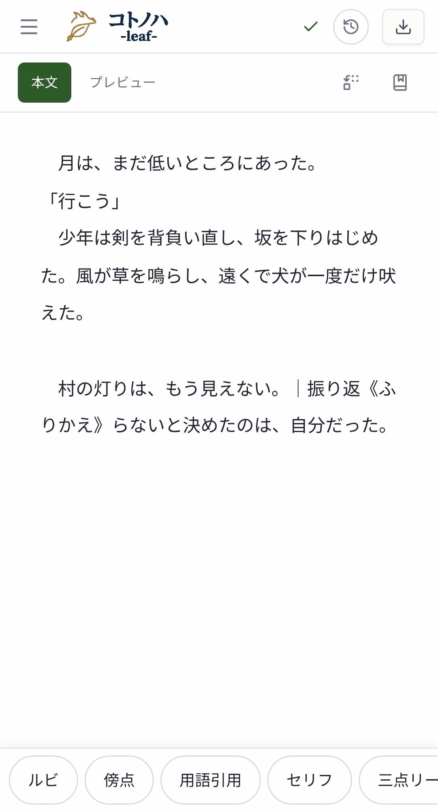
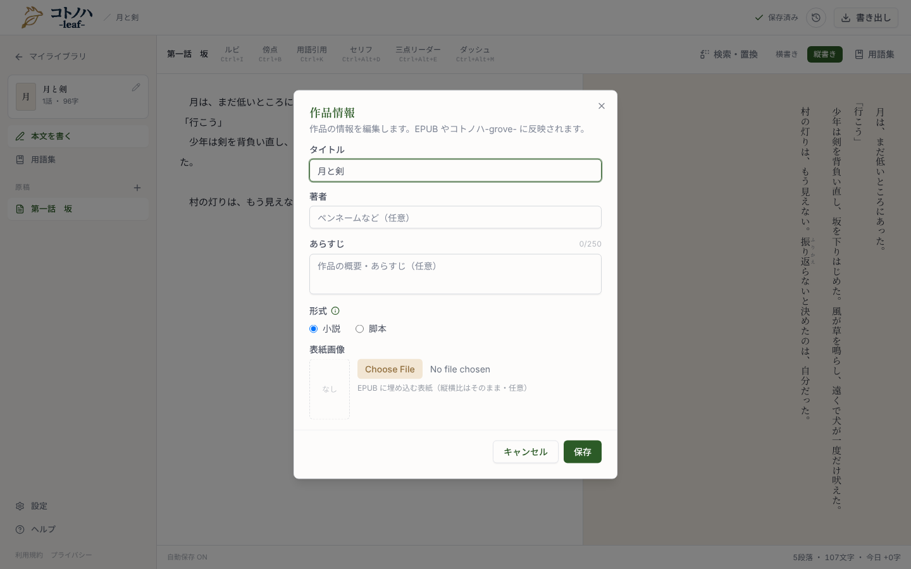
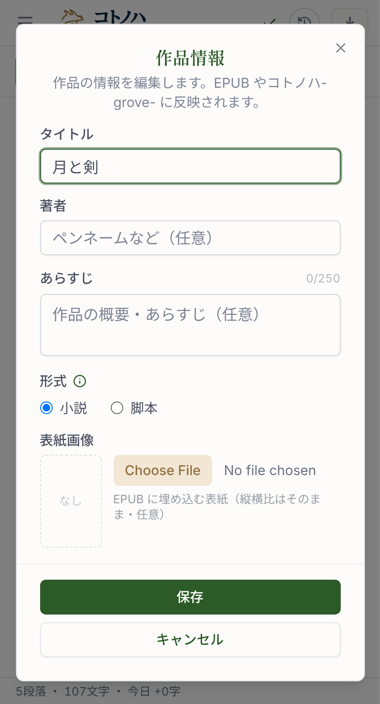

小説を、公募の書式（字数×行数・用紙・縦書き・ページ番号）で Word か PDF（印刷）に組みます。原稿用紙の枚数は、ライブラリと執筆画面の字数の横に出します。番号は設計（design.md）の UI 節と対応しています。

手本（脚本の作品の「脚本（提出用）」。チップ・前付けの枠・情報の枠をこれに揃える）
月と剣
字数は 10〜50、行数は 10〜50 の数で入れてください
文字の大きさ 10.5pt
印刷の画面で、送り先を「PDF に保存」に、倍率を 100%（または「実際のサイズ」）に、余白を「なし」か「デフォルト」にしてください。字の形は端末の明朝で変わります。
Word で開くと、Word の組み直しで数枚ずれることがあります。
本文がありません
選んだ書式で組んだ頁を、1マス1文字で並べて印刷します。下は 20字×20行・A4 の本文1頁目を、見本の文で組んだもの（撮影時の本文）。行の切れ目と枚数は、ダイアログの枚数と同じ関数から出ます。

脚本の作品には「枚」を出さない（原稿用紙プレビューがあるため）。本文が空の小説は「0字 ・ 0枚」。字数÷400（152枚）より多いのは、改行と禁則の空きを数えるため。
スマホ幅（現状と変更後）


小説の作品だけに出す。下書きが変わるたびに数え直す（保存を待たない）。サイドバーは開いている作品が変わったときだけ数える。


形式「小説」でも「形式」の下に梗概の欄を出す。脚本の説明文はいまのまま。保存先は同じ Work.synopsis。